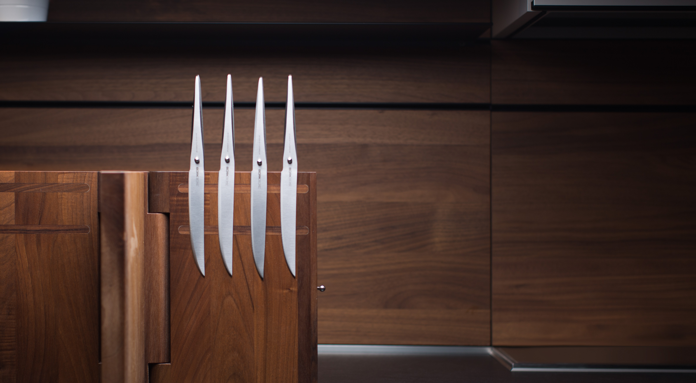
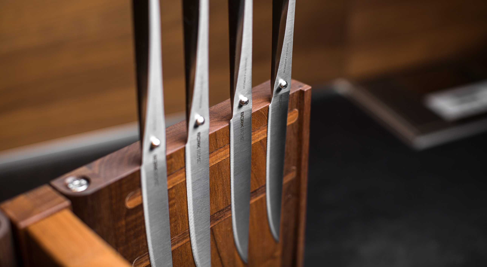

Набор ножей для стейка BORK HN571
Стейковый нож — узкий нож с поднятым острием и ровным обухом. Обычно используется как сервировочный нож к мясным блюдам.
Им очень удобно разрезать на тарелке кусок мяса, птицы или рыбу.
Комплект состоит из 4 ножей для стейка длиной 15 см. Ножи созданы без единого шва для гарантии гигиеничного и максимально комфортного использования.
Благодаря специальному способу затачивания изделие дольше остается острым.
Набор ножей для стейка BORK HN571 полностью изготовлен из японской высококачественной нержавеющей стали AISI 301.
Дизайн ножа выполнен студией Porsche Design.
Серия ножей была разработана вместе с топ-шеф- поварами из разных стран. Дизайн ножа основан на методах работы профессиональных поваров, которые часто используют свои ножи под разными углами резки.
Ручка и лезвие полностью сливаются друг с другом, образуя единое целое. Только шарик из нержавеющей стали сигнализирует о разделении, а также является упором для указательного и большого пальцев.
Необычный дизайн в сочетании с продуманной эргономикой делает ножи BORK уникальным дополнением вашей кухни и признанным инструментом более чем 200 шеф-поваров Германии.